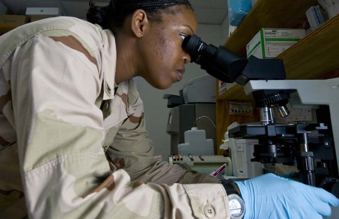
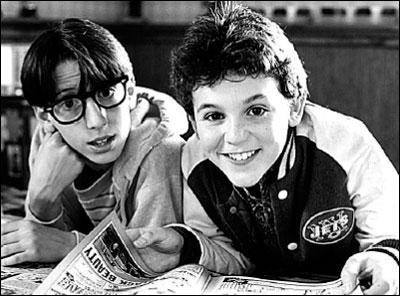
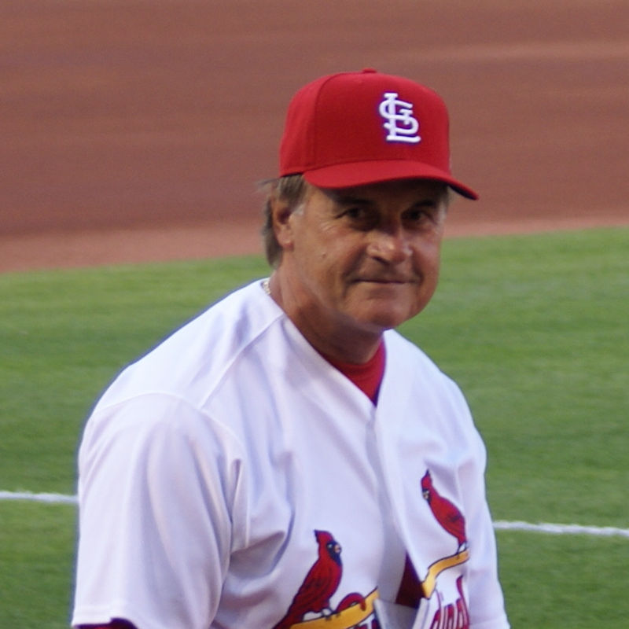

College for Individuals with Intellectual Disabilities
Exceptional Parent Magazine
I co-authored this article with the state representative I worked for, Tom Sannicandro. The article summarized his Ph.D. research showing how college affects students with intellectual disabilities such as Down syndrome.

The Price of Sequestration Cuts
The MetroWest Daily News
As the research analyst for State Rep. Tom Sannicandro, I wrote regular columns for local newspapers on his behalf. Here's a sample, about the impact of sequestration cuts in the federal government.
Even MS Can't Slow Reservoir's Jacobson
ESPN RISE Magazine
As Associate Sports Editor for ESPN RISE Magazine, I was responsible for writing profile stories on elite high school athletes. This one is on a top volleyball player who had recently been diagnosed with MS.

Pricey Nostalgia
The Denver Post
I interned at The Denver Post after I graduated from Syracuse University, and wrote dozens of stories, including this one on the reasons The Wonder Years DVDs had not yet been released.
In the Name of Diversity
The Daily Orange
I co-wrote and co-reported this piece on then-Syracuse Chancellor Nancy Cantor, who had sparked a free speech controversy on campus after she shut down a student TV station that was found to be airing offensive content.

Cardinals Are Silent But Deadly
The Buffalo News
As an intern at The Buffalo News I covered sports and arts. For this story, about a Blue Jays-Cardinals game, I got up close and personal with Cardinals manager Tony La Russa.